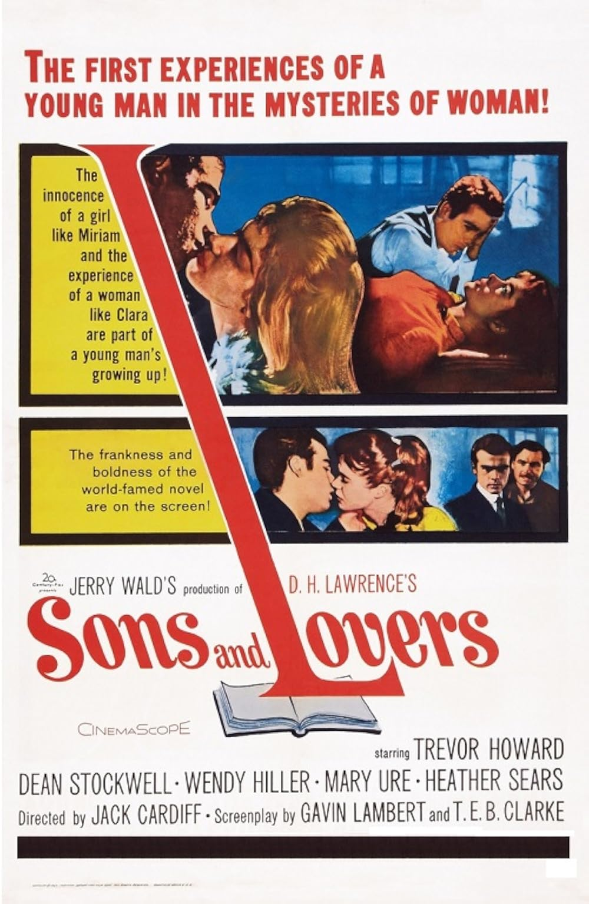

Sons and Lovers
33rd Academy Awards
(Oscars 1961)
7 Nominations, 1 Award
| Nominations | ||
|---|---|---|
| Category | Nominees | Result |
| Best Motion Picture | Jerry Wald | Nominated |
| Actor | Trevor Howard | Nominated |
| Actress in a Supporting Role | Mary Ure | Nominated |
| Directing | Jack Cardiff | Nominated |
| Writing (Screenplay--based on material from another medium) | Gavin Lambert and T. E. B. Clarke | Nominated |
| Cinematography (Black-and-White) | Freddie Francis | Won |
| Art Direction (Black-and-White) | Lionel Couch and Tom Morahan | Nominated |